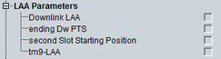

LAA UE Capabilities
This section indicates UE capabilities for licensed-assisted access.

LAA capabilities
Support of DL LAA operation.
Remote command:Support of partial allocation in the ending subframe of an LAA burst.
Remote command:Support of partial allocation in the initial subframe of an LAA burst.
Remote command:Support of transmission mode 9 for LAA downlinks.
Remote command: